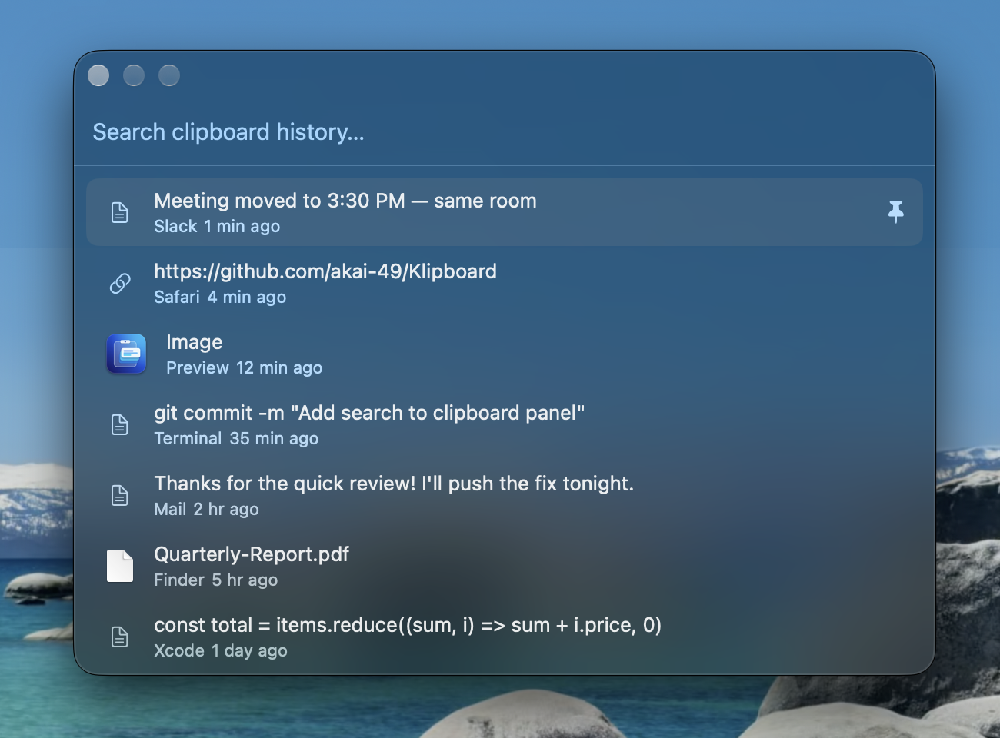

Clipboard history that feels built into macOS.
Klipboard remembers everything you copy. Press ⌥V anywhere, find what you need, and click it — it's pasted right where you were typing.

Simple, fast, and stays out of your way.
Remembers what you copy
Your last 100 copies are saved automatically. Pin the ones you use often so they're always at the top.
Pastes where you were typing
Pick an item and Klipboard pastes it straight into the app you were using — no switching windows.
Text, links, images & files
Works with anything you copy: notes, web links, screenshots, colors, and files from Finder.
Light on your Mac
Uses almost no battery or memory while it waits in the menu bar, even after weeks of use.
Skips your passwords
Passwords copied from 1Password, Bitwarden, or Keychain are never saved.
Ready after a restart
Starts on its own when you log in, with your history right where you left it. Everything stays on your Mac.
Keyboard Shortcuts
Do everything without touching the mouse.
| Open or close Klipboard | ⌥ V or ⌘ ⇧ V |
| Move through your history | ↑ ↓ |
| Paste the selected item | ↵ Return or click |
| Delete the selected item | ⌘ ⌫ |
| Close without pasting | Esc |
| Pin, favorite, or show in Finder | Right-click |
Installation
Two ways to install — pick whichever you like.
- Click Download Klipboard at the top of this page and open the downloaded file.
- Drag Klipboard into your Applications folder.
- If macOS says “Klipboard” Not Opened, click Done, then go to System Settings → Privacy & Security and click Open Anyway. Or paste this into Terminal:
- The first time you paste, click Open System Settings and turn on Klipboard under Privacy & Security → Accessibility. Then quit and reopen Klipboard.
- That's it. Klipboard starts by itself when you log in. You can turn this off with Launch at Login in its menu-bar menu.